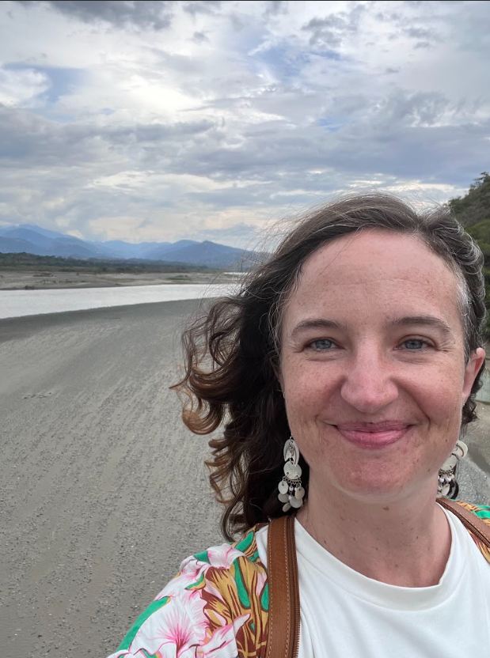

Amanda M. Smith

Associate Professor of Latin American culture at the University of California, Santa Cruz.
Her research explores relationships among space, ecology, decoloniality, and development in twentieth- and twenty-first-century Latin America.
Her book, Mapping the Amazon: Literary Geography after the Rubber Boom (Liverpool University Press, 2021),
examines how stories told about the Amazon in canonical twentieth-century novels have shaped the way people across the globe understand and use the region.
She is currently at work on her next book, The Nature of Conflict, which analyzes the role of art and culture in highlighting the complexities of considering nature as a juridical victim with rights in the wake of Colombia's armed conflict.
Smith's work has appeared in The Journal of Latin American Cultural Studies; The Journal of West Indian Literatures; ReVista: Harvard Review of Latin America; A contracorriente; Chiricú Journal: Latina/o Literatures, Arts, and Cultures; and Ciberletras.
Fluvial Forms of Care after the Colombian Peace Accords:
The Magdalena River as Tomb and Teacher
Colombia’s Magdalena River, running almost the whole length of the country and spilling out into the Caribbean Sea, has historically been the country’s most important waterway for transportation, trade, commerce, and the cultural imaginary. Since the 1960s, it has also served as a mass grave for victims of sociopolitical violence disappeared into its currents. But the river has refused complicity in this human drama by continuously resurfacing bodies.
What would it mean to take the river’s agency seriously in the history of violent struggle in Colombia ? How has the Magdalena, as well as other rivers, shaped the conflicts that have defined the country’s past and present ? What can the river teach us about the more-than-human impacts of “human” conflict ?
Drawing on perspectives from the environmental humanities as well as transitional justice studies, this talk examines the Magdalena’s return of anonymous corpses in a variety of media forms including fictional and documentary film, photography, journalistic essay, and drawings by ex-combatants of Colombia’s armed conflict. Across these cultural products, a riparian aesthetic emerges that blurs the boundaries between violence and peace, life and death, kin and not kin, and human and non-human.
I argue that the flowing river aesthetic becomes a mode of healing in the face of the ambiguous loss of missing loved ones whose whereabouts may never be known. Then contrasting, fluvial forms of care with state policies implemented to deal with anonymous corpses, I suggest the state’s approach causes further harm by blocking flows of love, care, and healing beyond familial or community bonds. Colombian rivers have increasingly been called witnesses to and victims of Colombian violence, and my discussion also reveals them as subjects of knowledge from which we desperately need to learn.